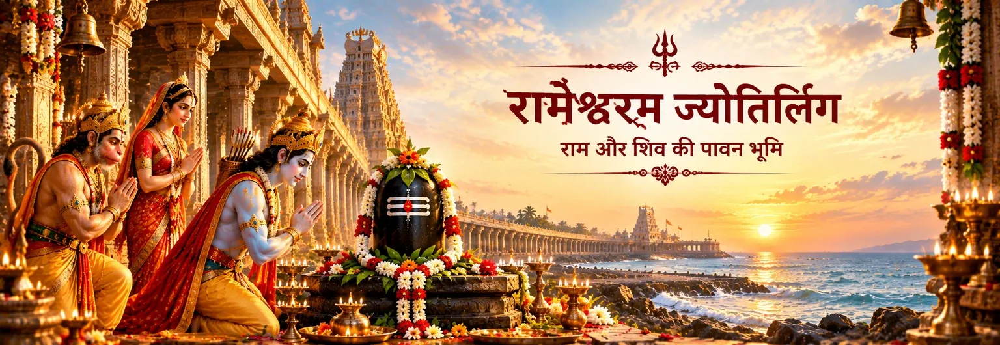

अधिष्ठाता शिव-स्वरूप
Ramanatha
रामनाथ
রামনাথ
मुख्य देवता रामनाथ रूप में शिव हैं, जिनका नाम स्थल-परंपरा में राम और शिव के संबंध से गहराई से जुड़ा है।

पवित्र तीर्थ
रामेश्वरम उन प्रमुख तीर्थों में है जहाँ राम और शिव की परंपराएँ एक साथ दिखाई देती हैं। रामेश्वरम द्वीप पर स्थित रामनाथस्वामी मंदिर भगवान शिव के रामनाथ रूप को समर्पित है और परंपरा में इसे बारह ज्योतिर्लिंगों में एक माना जाता है। यह स्थल चार प्रमुख चार धाम तीर्थों में भी गिना जाता है।
इसके पवित्र आख्यान को एक से अधिक ग्रंथीय स्तरों में समझना चाहिए। वाल्मीकि रामायण में बाद में राम सीता को वह स्थान दिखाते हैं जहाँ उनकी सेना ठहरी थी और कहते हैं कि वहाँ पहले महादेव ने उन पर कृपा की थी। शिवलिंग की स्थापना, सीता द्वारा बनाए गए रेत के लिंग और हनुमान द्वारा दूसरे लिंग को लाने की विस्तृत कथा बाद की रामायण, पौराणिक और मंदिर-परंपराओं में मिलती है, जिनमें स्कन्द पुराण का सेतु-माहात्म्य भी शामिल है।
পवित्र भू-दृश्य
रामेश्वरम केवल एक मंदिर नहीं है; पूरा द्वीप और उसके आसपास के तीर्थ एक जुड़े हुए पवित्र भू-दृश्य का निर्माण करते हैं, जहाँ लंका की ओर राम की यात्रा और शिव-उपासना की स्मृति साथ रहती है।
मुख्य देवता रामनाथ रूप में शिव हैं, जिनका नाम स्थल-परंपरा में राम और शिव के संबंध से गहराई से जुड़ा है।
रामनाथ का यह तीर्थ स्थापित ज्योतिर्लिंग-परंपरा में बारह ज्योतिर्लिंगों में गिना जाता है; कैम्ब्रिज के शोध के अनुसार यह पहचान कम-से-कम बारहवीं शताब्दी से प्रमाणित है।
आसपास का पवित्र भूगोल सेतुबन्ध, समुद्र-पार जाने और लंका की ओर राम की यात्रा से जुड़े मार्ग को स्मरण करता है।
रामनाथस्वामी मंदिर परिसर में २२ कुएँ या तीर्थ हैं, जो पारंपरिक तीर्थ-अनुभव का महत्वपूर्ण हिस्सा हैं।
ग्रंथीय परतें
वाल्मीकि रामायण, युद्धकाण्ड ६.१२३.१९, एक महत्वपूर्ण लेकिन संक्षिप्त उल्लेख देता है। वापसी की यात्रा में राम उस द्वीप की ओर संकेत करते हैं जहाँ उनकी सेना ने पड़ाव डाला था और कहते हैं कि वहाँ पहले महादेव ने उन पर कृपा की थी। उसी प्रसंग में आगे सेतुबन्ध को त्रैलोक्य द्वारा पूजित पवित्र तीर्थ कहा गया है।
स्कन्द पुराण का सेतु-माहात्म्य इससे कहीं अधिक विस्तृत मंदिर और तीर्थ-कथा प्रस्तुत करता है। उसका अध्याय ४४ विशेष रूप से “रामनाथ लिंग की स्थापना” पर है और अध्याय ४५ लिंग की स्थापना के बाद राम के उपदेश को आगे बढ़ाता है। इस परंपरा में रेत से बने लिंग और बाद में हनुमान द्वारा दूसरे लिंग के लाए जाने की कथा मिलती है।
यह अंतर महत्वपूर्ण है। यह कहना उचित है कि व्यापक रामायण और पौराणिक परंपरा में रामेश्वरम राम की शिव-उपासना से गहराई से जुड़ा है। लेकिन विस्तृत स्थापना-कथा को बाद के ग्रंथों और स्थल-परंपराओं में संरक्षित कथा कहना अधिक सटीक है, न कि उसके हर विवरण को सीधे वाल्मीकि के महाकाव्य का कथन मानना।
जीवित भक्ति
इस स्थल की आध्यात्मिक शक्ति संबंध में है: यहाँ राम को शिव-उपासक के रूप में स्मरण किया जाता है और शिव को रामनाथ—राम से जुड़े प्रभु—के रूप में।
रामेश्वरम में उपासना को देव-स्वरूपों की प्रतिस्पर्धा नहीं, बल्कि तीर्थ के माध्यम से स्मरण किए गए पवित्र संबंध के रूप में देखा जाता है।
स्मृत सेतु भूगोल और भक्ति को जोड़ता है—लंका की ओर पारगमन और भीतर समर्पण की ओर यात्रा।
रामनाथ नाम ही इस बात का भक्तिपूर्ण स्मरण बन जाता है कि इस पवित्र तट पर राम और शिव को साथ याद किया जाता है।
समुद्र, मंदिर, तीर्थ, गलियारे और पूजा कथा को केवल स्मृति नहीं रहने देते; वे उसे जीवित तीर्थ-अनुभव बनाते हैं।
एक शांत चिंतन
रामेश्वरम में समुद्र केवल दृश्य नहीं है। वह पारगमन, प्रार्थना और परंपराओं के मिलन की स्मृति का हिस्सा बन जाता है। भक्त राम की कथा को साथ लेकर शिव के पास पहुँचता है; इस प्रकार तीर्थ दोनों नामों को एक साथ धारण करता है।
पवित्र संदेश केवल “राम ने शिव की पूजा की” इतना ही नहीं है। गहरी स्मृति यह है कि भक्ति एक सेतु बन सकती है—नामों, परंपराओं, स्थानों और मानव-हृदय के बीच।
भक्तों के प्रश्न
हाँ। रामनाथ का रामेश्वरम तीर्थ परंपरागत रूप से शिव के बारह ज्योतिर्लिंगों में गिना जाता है। मंदिर पर हुए ऐतिहासिक शोध के अनुसार यह पहचान कम-से-कम बारहवीं शताब्दी से प्रमाणित है।
बाद की परंपरा में मिलने वाले विस्तृत रूप में नहीं। वाल्मीकि के युद्धकाण्ड में यह कहा गया है कि उस द्वीप पर पहले महादेव ने राम पर कृपा की थी, लेकिन स्थापना की विस्तृत कथा बाद के ग्रंथीय और स्थल-परंपरागत स्रोतों में मिलती है।
स्कन्द पुराण के सेतु-माहात्म्य की परंपरा में पहला लिंग रेत से बना बताया गया है और हनुमान के दूसरे लिंग के साथ लौटने से पहले उसकी स्थापना होती है। यह बाद की स्थल-परंपरा है, वाल्मीकि रामायण का प्रत्यक्ष वर्णन नहीं।
क्योंकि यहाँ कई पवित्र स्मृतियाँ एक साथ आती हैं—सेतु पर राम का शिव से संबंध, रामनाथ ज्योतिर्लिंग, रामेश्वरम का तीर्थ-भूगोल और बाद की राम की लिंग-पूजा की कथा।
पवित्र यात्रा आगे बढ़ती है
रामेश्वरम ग्रंथ, पवित्र भूगोल और जीवित उपासना के संगम पर स्थित है। इसकी कथा तब सबसे अधिक अर्थपूर्ण होती है जब हर स्रोत को अपनी भाषा में बोलने दिया जाए: वाल्मीकि सेतु पर महादेव की कृपा की राम द्वारा की गई स्मृति को सुरक्षित रखते हैं, जबकि स्कन्द पुराण और मंदिर-परंपराएँ लिंग, तीर्थों और तीर्थ-यात्रा की कथा को विस्तार देती हैं। इन सभी परतों ने मिलकर रामेश्वरम को राम–शिव परंपरा के सबसे स्थायी पवित्र भू-दृश्यों में से एक बनाया है।